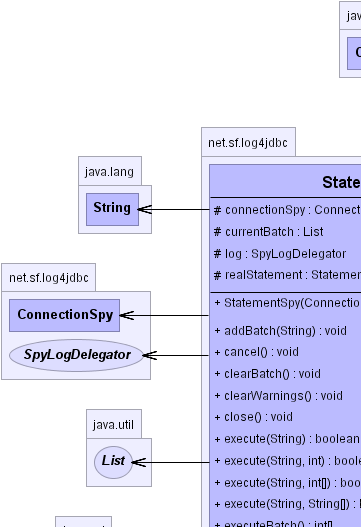
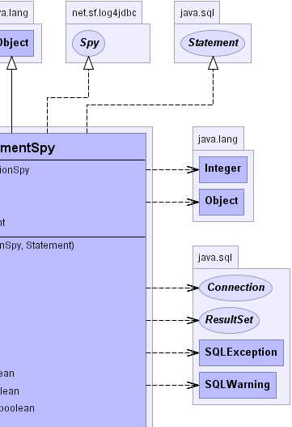
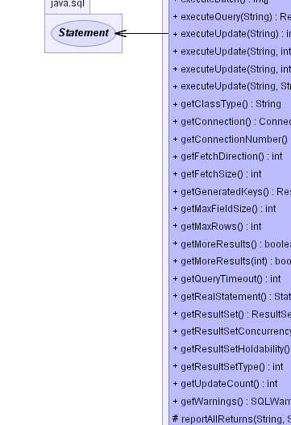
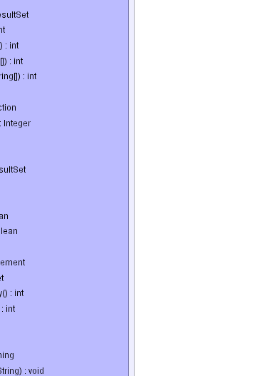
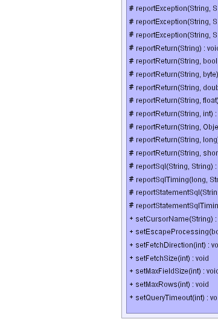
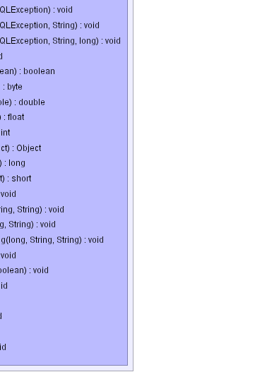

net.sf.log4jdbc.StatementSpy
net.sf.log4jdbc.StatementSpy
|
log4jdbc3 1.2beta2 | |||||||||
| PREV CLASS NEXT CLASS | FRAMES NO FRAMES | |||||||||
| SUMMARY: NESTED | FIELD | CONSTR | METHOD | DETAIL: FIELD | CONSTR | METHOD | |||||||||
java.lang.Object
Wraps a Statement and reports method calls, returns and exceptions. jdbc 3 version
|  |  |
|  |  |
|  |  |
| Field Summary | |
protected ConnectionSpy |
connectionSpy
The Connection that created this Statement. |
protected List |
currentBatch
Tracking of current batch (see addBatch, clearBatch and executeBatch) //todo: should access to this List be synchronized? |
protected SpyLogDelegator |
log
|
protected Statement |
realStatement
The real statement that this StatementSpy wraps. |
| Fields inherited from interface java.sql.Statement |
CLOSE_ALL_RESULTS, CLOSE_CURRENT_RESULT, EXECUTE_FAILED, KEEP_CURRENT_RESULT, NO_GENERATED_KEYS, RETURN_GENERATED_KEYS, SUCCESS_NO_INFO |
| Constructor Summary | |
StatementSpy(ConnectionSpy connectionSpy,
Statement realStatement)
Create a StatementSpy that wraps another Statement for the purpose of logging all method calls, sql, exceptions and return values. |
|
| Method Summary | |
void |
addBatch(String sql)
|
void |
cancel()
|
void |
clearBatch()
|
void |
clearWarnings()
|
void |
close()
|
boolean |
execute(String sql)
|
boolean |
execute(String sql,
int autoGeneratedKeys)
|
boolean |
execute(String sql,
int[] columnIndexes)
|
boolean |
execute(String sql,
String[] columnNames)
|
int[] |
executeBatch()
|
ResultSet |
executeQuery(String sql)
|
int |
executeUpdate(String sql)
|
int |
executeUpdate(String sql,
int autoGeneratedKeys)
|
int |
executeUpdate(String sql,
int[] columnIndexes)
|
int |
executeUpdate(String sql,
String[] columnNames)
|
String |
getClassType()
Get the type of class being spied upon. |
Connection |
getConnection()
|
Integer |
getConnectionNumber()
Get the connection number. |
int |
getFetchDirection()
|
int |
getFetchSize()
|
ResultSet |
getGeneratedKeys()
|
int |
getMaxFieldSize()
|
int |
getMaxRows()
|
boolean |
getMoreResults()
|
boolean |
getMoreResults(int current)
|
int |
getQueryTimeout()
|
Statement |
getRealStatement()
Get the real Statement that this StatementSpy wraps. |
ResultSet |
getResultSet()
|
int |
getResultSetConcurrency()
|
int |
getResultSetHoldability()
|
int |
getResultSetType()
|
int |
getUpdateCount()
|
SQLWarning |
getWarnings()
|
protected void |
reportAllReturns(String methodCall,
String msg)
Report (for logging) that a method returned. |
protected void |
reportException(String methodCall,
SQLException exception)
Report an exception to be logged. |
protected void |
reportException(String methodCall,
SQLException exception,
String sql)
Report an exception to be logged. |
protected void |
reportException(String methodCall,
SQLException exception,
String sql,
long execTime)
Report an exception to be logged which includes timing data on a sql failure. |
protected void |
reportReturn(String methodCall)
Conveniance method to report (for logging) that a method returned (void return type). |
protected boolean |
reportReturn(String methodCall,
boolean value)
Conveniance method to report (for logging) that a method returned a boolean value. |
protected byte |
reportReturn(String methodCall,
byte value)
Conveniance method to report (for logging) that a method returned a byte value. |
protected double |
reportReturn(String methodCall,
double value)
Conveniance method to report (for logging) that a method returned a double value. |
protected float |
reportReturn(String methodCall,
float value)
Conveniance method to report (for logging) that a method returned a float value. |
protected int |
reportReturn(String methodCall,
int value)
Conveniance method to report (for logging) that a method returned a int value. |
protected long |
reportReturn(String methodCall,
long value)
Conveniance method to report (for logging) that a method returned a long value. |
protected Object |
reportReturn(String methodCall,
Object value)
Conveniance method to report (for logging) that a method returned an Object. |
protected short |
reportReturn(String methodCall,
short value)
Conveniance method to report (for logging) that a method returned a short value. |
protected void |
reportSql(String sql,
String methodCall)
Report SQL for logging. |
protected void |
reportSqlTiming(long execTime,
String sql,
String methodCall)
Report SQL for logging. |
protected void |
reportStatementSql(String sql,
String methodCall)
Report SQL for logging with a warning that it was generated from a statement. |
protected void |
reportStatementSqlTiming(long execTime,
String sql,
String methodCall)
Report SQL for logging with a warning that it was generated from a statement. |
void |
setCursorName(String name)
|
void |
setEscapeProcessing(boolean enable)
|
void |
setFetchDirection(int direction)
|
void |
setFetchSize(int rows)
|
void |
setMaxFieldSize(int max)
|
void |
setMaxRows(int max)
|
void |
setQueryTimeout(int seconds)
|
| Methods inherited from class java.lang.Object |
clone, equals, finalize, getClass, hashCode, notify, notifyAll, toString, wait, wait, wait |
| Field Detail |
protected final SpyLogDelegator log
protected ConnectionSpy connectionSpy
protected Statement realStatement
protected List currentBatch
| Constructor Detail |
public StatementSpy(ConnectionSpy connectionSpy,
Statement realStatement)
connectionSpy - Connection that created this Statement.realStatement - real underlying Statement that this StatementSpy wraps.| Method Detail |
public Statement getRealStatement()
public String getClassType()
Spy
getClassType in interface Spypublic Integer getConnectionNumber()
Spy
getConnectionNumber in interface Spy
protected void reportException(String methodCall,
SQLException exception,
String sql,
long execTime)
methodCall - description of method call and arguments passed to it that generated the exception.exception - exception that was generatedsql - SQL associated with the call.execTime - amount of time that the jdbc driver was chugging on the SQL before it threw an exception.
protected void reportException(String methodCall,
SQLException exception,
String sql)
methodCall - description of method call and arguments passed to it that generated the exception.exception - exception that was generatedsql - SQL associated with the call.
protected void reportException(String methodCall,
SQLException exception)
methodCall - description of method call and arguments passed to it that generated the exception.exception - exception that was generated
protected void reportAllReturns(String methodCall,
String msg)
methodCall - description of method call and arguments passed to it that returned.msg - description of what the return value that was returned. may be an empty String for void return types.
protected boolean reportReturn(String methodCall,
boolean value)
methodCall - description of method call and arguments passed to it that returned.value - boolean return value.
protected byte reportReturn(String methodCall,
byte value)
methodCall - description of method call and arguments passed to it that returned.value - byte return value.
protected int reportReturn(String methodCall,
int value)
methodCall - description of method call and arguments passed to it that returned.value - int return value.
protected double reportReturn(String methodCall,
double value)
methodCall - description of method call and arguments passed to it that returned.value - double return value.
protected short reportReturn(String methodCall,
short value)
methodCall - description of method call and arguments passed to it that returned.value - short return value.
protected long reportReturn(String methodCall,
long value)
methodCall - description of method call and arguments passed to it that returned.value - long return value.
protected float reportReturn(String methodCall,
float value)
methodCall - description of method call and arguments passed to it that returned.value - float return value.
protected Object reportReturn(String methodCall,
Object value)
methodCall - description of method call and arguments passed to it that returned.value - return Object.
protected void reportReturn(String methodCall)
methodCall - description of method call and arguments passed to it that returned.
protected void reportStatementSql(String sql,
String methodCall)
sql - the SQL being runmethodCall - the name of the method that was running the SQL
protected void reportStatementSqlTiming(long execTime,
String sql,
String methodCall)
execTime - execution time in msec.sql - the SQL being runmethodCall - the name of the method that was running the SQL
protected void reportSqlTiming(long execTime,
String sql,
String methodCall)
execTime - execution time in msec.sql - the SQL being runmethodCall - the name of the method that was running the SQL
protected void reportSql(String sql,
String methodCall)
sql - the SQL being runmethodCall - the name of the method that was running the SQL
public SQLWarning getWarnings()
throws SQLException
getWarnings in interface StatementSQLException
public int executeUpdate(String sql,
String[] columnNames)
throws SQLException
executeUpdate in interface StatementSQLException
public boolean execute(String sql,
String[] columnNames)
throws SQLException
execute in interface StatementSQLException
public void setMaxRows(int max)
throws SQLException
setMaxRows in interface StatementSQLException
public boolean getMoreResults()
throws SQLException
getMoreResults in interface StatementSQLException
public void clearWarnings()
throws SQLException
clearWarnings in interface StatementSQLException
public void addBatch(String sql)
throws SQLException
addBatch in interface StatementSQLException
public int getResultSetType()
throws SQLException
getResultSetType in interface StatementSQLException
public void clearBatch()
throws SQLException
clearBatch in interface StatementSQLException
public void setFetchDirection(int direction)
throws SQLException
setFetchDirection in interface StatementSQLException
public int[] executeBatch()
throws SQLException
executeBatch in interface StatementSQLException
public void setFetchSize(int rows)
throws SQLException
setFetchSize in interface StatementSQLException
public int getQueryTimeout()
throws SQLException
getQueryTimeout in interface StatementSQLException
public Connection getConnection()
throws SQLException
getConnection in interface StatementSQLException
public ResultSet getGeneratedKeys()
throws SQLException
getGeneratedKeys in interface StatementSQLException
public void setEscapeProcessing(boolean enable)
throws SQLException
setEscapeProcessing in interface StatementSQLException
public int getFetchDirection()
throws SQLException
getFetchDirection in interface StatementSQLException
public void setQueryTimeout(int seconds)
throws SQLException
setQueryTimeout in interface StatementSQLException
public boolean getMoreResults(int current)
throws SQLException
getMoreResults in interface StatementSQLException
public ResultSet executeQuery(String sql)
throws SQLException
executeQuery in interface StatementSQLException
public int getMaxFieldSize()
throws SQLException
getMaxFieldSize in interface StatementSQLException
public int executeUpdate(String sql)
throws SQLException
executeUpdate in interface StatementSQLException
public void cancel()
throws SQLException
cancel in interface StatementSQLException
public void setCursorName(String name)
throws SQLException
setCursorName in interface StatementSQLException
public int getFetchSize()
throws SQLException
getFetchSize in interface StatementSQLException
public int getResultSetConcurrency()
throws SQLException
getResultSetConcurrency in interface StatementSQLException
public int getResultSetHoldability()
throws SQLException
getResultSetHoldability in interface StatementSQLException
public void setMaxFieldSize(int max)
throws SQLException
setMaxFieldSize in interface StatementSQLException
public boolean execute(String sql)
throws SQLException
execute in interface StatementSQLException
public int executeUpdate(String sql,
int autoGeneratedKeys)
throws SQLException
executeUpdate in interface StatementSQLException
public boolean execute(String sql,
int autoGeneratedKeys)
throws SQLException
execute in interface StatementSQLException
public int executeUpdate(String sql,
int[] columnIndexes)
throws SQLException
executeUpdate in interface StatementSQLException
public boolean execute(String sql,
int[] columnIndexes)
throws SQLException
execute in interface StatementSQLException
public ResultSet getResultSet()
throws SQLException
getResultSet in interface StatementSQLException
public int getMaxRows()
throws SQLException
getMaxRows in interface StatementSQLException
public void close()
throws SQLException
close in interface StatementSQLException
public int getUpdateCount()
throws SQLException
getUpdateCount in interface StatementSQLException
|
log4jdbc3 1.2beta2 | |||||||||
| PREV CLASS NEXT CLASS | FRAMES NO FRAMES | |||||||||
| SUMMARY: NESTED | FIELD | CONSTR | METHOD | DETAIL: FIELD | CONSTR | METHOD | |||||||||